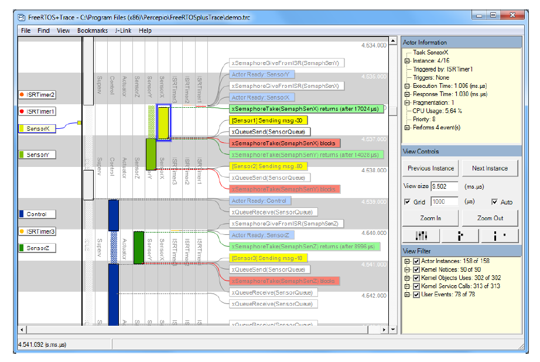
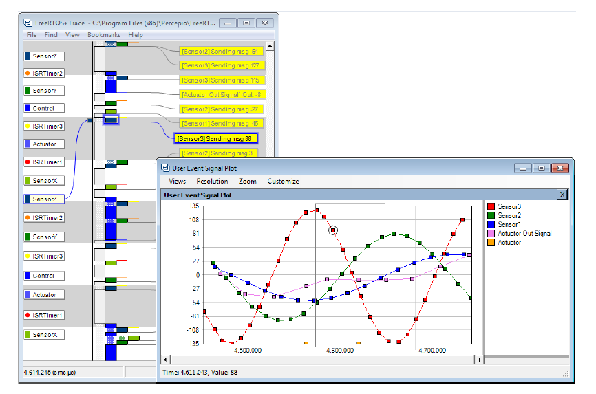

12 Developer Support
12.1 Introduction
This chapter highlights a set of features that are included to maximize productivity by:
- Providing insight into how an application is behaving.
- Highlighting opportunities for optimization.
- Trapping errors at the point at which they occur.
12.2 configASSERT()
In C, the macro assert() is used to verify an assertion (an
assumption) made by the program. The assertion is written as a C
expression, and if the expression evaluates to false (0), then the
assertion has deemed to have failed. For example, Listing 12.1 tests the
assertion that the pointer pxMyPointer is not NULL.
/* Test the assertion that pxMyPointer is not NULL */
assert( pxMyPointer != NULL );
Listing 12.1 Using the standard C assert() macro to check pxMyPointer is not NULL
The application writer specifies the action to take if an assertion
fails by providing an implementation of the assert() macro.
The FreeRTOS source code does not call assert(), because assert() is not
available with all the compilers with which FreeRTOS is compiled.
Instead, the FreeRTOS source code contains lots of calls to a macro
called configASSERT(), which can be defined by the application writer in
FreeRTOSConfig.h, and behaves exactly like the standard C assert().
A failed assertion must be treated as a fatal error. Do not attempt to execute past a line that has failed an assertion.
Using
configASSERT()improves productivity by immediately trapping and identifying many of the most common sources of error. It is strongly advised to haveconfigASSERT()defined while developing or debugging a FreeRTOS application.
Defining configASSERT() will greatly assist in run-time debugging, but
will also increase the application code size, and therefore slow down
its execution. If a definition of configASSERT() is not provided, then
the default empty definition will be used, and all the calls to
configASSERT() will be completely removed by the C pre-processor.
12.2.1 Example configASSERT() definitions
The definition of configASSERT() shown in Listing 12.2 is useful when an
application is being executed under the control of a debugger. It will
halt execution on any line that fails an assertion, so the line that
failed the assertion will be the line displayed by the debugger when the
debug session is paused.
/* Disable interrupts so the tick interrupt stops executing, then sit
in a loop so execution does not move past the line that failed the
assertion. If the hardware supports a debug break instruction, then the
debug break instruction can be used in place of the for() loop. */
#define configASSERT( x ) if( ( x ) == 0 ) { taskDISABLE_INTERRUPTS(); for(;;); }
Listing 12.2 A simple configASSERT() definition useful when executing under the control of a debugger
The definition of configASSERT() shown in Listing 12.3 is useful when an
application is not being executed under the control of a debugger. It
prints out, or otherwise records, the source code line that failed an
assertion. The line that failed the assertion is identified using the
standard C __FILE__ macro to obtain the name of the source file, and
the standard C __LINE__ macro to obtain the line number within the
source file.
/* This function must be defined in a C source file, not the FreeRTOSConfig.h
header file. */
void vAssertCalled( const char *pcFile, uint32_t ulLine )
{
/* Inside this function, pcFile holds the name of the source file that
contains the line that detected the error, and ulLine holds the line
number in the source file. The pcFile and ulLine values can be printed
out, or otherwise recorded, before the following infinite loop is
entered. */
RecordErrorInformationHere( pcFile, ulLine );
/* Disable interrupts so the tick interrupt stops executing, then sit in a
loop so execution does not move past the line that failed the assertion. */
taskDISABLE_INTERRUPTS();
for( ;; );
}
/*-----------------------------------------------------------*/
/* These following two lines must be placed in FreeRTOSConfig.h. */
extern void vAssertCalled( const char *pcFile, unsigned long ulLine );
#define configASSERT( x ) if( ( x ) == 0 ) vAssertCalled( __FILE__, __LINE__ )
Listing 12.3 A configASSERT() definition that records the source code line that failed an assertion
12.3 Tracealyzer for FreeRTOS
Tracealyzer for FreeRTOS is a run-time diagnostic and optimization tool provided by our partner company, Percepio.
Tracealyzer for FreeRTOS captures valuable dynamic behavior information, then presents the captured information in interconnected graphical views. The tool is also capable of displaying multiple synchronized views.
The captured information is invaluable when analyzing, troubleshooting, or simply optimizing a FreeRTOS application.
Tracealyzer for FreeRTOS can be used side-by-side with a traditional debugger, and complements the debugger's view with a higher level, time-based perspective.

Figure 12.1 FreeRTOS+Trace includes more than 20 interconnected views

Figure 12.2 FreeRTOS+Trace main trace view - one of more than 20 interconnected trace views

Figure 12.3 FreeRTOS+Trace CPU load view - one of more than 20 interconnected trace views

Figure 12.4 FreeRTOS+Trace response time view - one of more than 20 interconnected trace views

Figure 12.5 FreeRTOS+Trace user event plot view - one of more than 20 interconnected trace views

Figure 12.6 FreeRTOS+Trace kernel object history view - one of more than 20 interconnected trace views
12.4 Debug Related Hook (Callback) Functions
12.4.1 Malloc failed hook
The malloc failed hook (or callback) was described in Chapter 3, Heap Memory Management.
Defining a malloc failed hook ensures the application developer is notified immediately if an attempt to create a task, queue, semaphore or event group fails.
12.4.2 Stack overflow hook
Details of the stack overflow hook are provided in section 13.3, Stack Overflow.
Defining a stack overflow hook ensures the application developer is notified if the amount of stack used by a task exceeds the stack space allocated to the task.
12.5 Viewing Run-time and Task State Information
12.5.1 Task Run-Time Statistics
Task run-time statistics provide information on the amount of processing time each task has received. A task's run time is the total time the task has been in the Running state since the application booted.
Run-time statistics are intended to be used as a profiling and debugging aid during the development phase of a project. The information they provide is only valid until the counter used as the run-time statistics clock overflows. Collecting run-time statistics will increase the task context switch time.
To obtain binary run-time statistics information, call the
uxTaskGetSystemState() API function. To obtain run-time statistics
information as a human readable ASCII table, call the
vTaskGetRunTimeStatistics() helper function.
12.5.2 The Run-Time Statistics Clock
Run-time statistics need to measure fractions of a tick period. Therefore, the RTOS tick count is not used as the run-time statistics clock, and the clock is instead provided by the application code. It is recommended to make the frequency of the run-time statistics clock between 10 and 100 times faster than the frequency of the tick interrupt. The faster the run-time statistics clock, the more accurate the statistics will be, but also the sooner the time value will overflow.
Ideally, the time value will be generated by a free-running 32-bit peripheral timer/counter, the value of which can be read with no other processing overhead. If the available peripherals and clock speeds do not make that technique possible, then alternative, but less efficient, techniques include:
-
Configure a peripheral to generate a periodic interrupt at the desired run-time statistics clock frequency, and then use a count of the number of interrupts generated as the run-time statistics clock.
This method is very inefficient if the periodic interrupt is only used for the purpose of providing a run-time statistics clock. However, if the application already uses a periodic interrupt with a suitable frequency, then it is simple and efficient to add a count of the number of interrupts generated into the existing interrupt service routine.
-
Generate a 32-bit value by using the current value of a free running 16-bit peripheral timer as the 32-bit value's least significant 16-bits, and the number of times the timer has overflowed as the 32-bit value's most significant 16-bits.
It is possible, with appropriate and somewhat complex manipulation, to generate a run-time statistics clock by combining the RTOS tick count with the current value of an ARM Cortex-M SysTick timer. Some of the demo projects in the FreeRTOS download demonstrate how this is achieved.
12.5.3 Configuring an Application to Collect Run-Time Statistics
Below are details on the macros necessary to collect task run-time
statistics. Originally, the macros were intended to be included in
the RTOS port layer, which is why the macros are prefixed 'port', but it
has proven more practical to define them in FreeRTOSConfig.h.
Macros used in the collection of run-time statistics
-
configGENERATE_RUN_TIME_STATSThis macro must be set to 1 in FreeRTOSConfig.h. When this macro is set to 1 the scheduler will call the other macros detailed in this section at the appropriate times.
-
portCONFIGURE_TIMER_FOR_RUN_TIME_STATS()This macro must be provided to initialize whichever peripheral is used to provide the run-time statistics clock.
-
portGET_RUN_TIME_COUNTER_VALUE(), orportALT_GET_RUN_TIME_COUNTER_VALUE(Time)One of these two macros must be provided to return the current run-time statistics clock value. This is the total time the application has been running, in run-time statistics clock units, since the application first booted.
If the first macro is used, it must be defined to evaluate to the current clock value. If the second macro is used, it must be defined to set its 'Time' parameter to the current clock value.
12.5.4 The uxTaskGetSystemState() API Function
uxTaskGetSystemState() provides a snapshot of status information for
each task under the control of the FreeRTOS scheduler. The information
is provided as an array of TaskStatus_t structures, with one index in
the array for each task. TaskStatus_t is described by Listing 12.5 and
below.
UBaseType_t uxTaskGetSystemState( TaskStatus_t * const pxTaskStatusArray,
const UBaseType_t uxArraySize,
configRUN_TIME_COUNTER_TYPE * const pulTotalRunTime );
Listing 12.4 The uxTaskGetSystemState() API function prototype
Note:
configRUN_TIME_COUNTER_TYPEdefaults touint32_tfor backward compatibility, but can be overridden in FreeRTOSConfig.h ifuint32_tis too restrictive.
uxTaskGetSystemState() parameters and return value
-
pxTaskStatusArrayA pointer to an array of
TaskStatus_tstructures.The array must contain at least one
TaskStatus_tstructure for each task. The number of tasks can be determined using theuxTaskGetNumberOfTasks()API function.The
TaskStatus_tstructure is shown in Listing 12.5, and the TaskStatus_t structure members are described in the next list. -
uxArraySizeThe size of the array pointed to by the
pxTaskStatusArrayparameter. The size is specified as the number of indexes in the array (the number ofTaskStatus_tstructures contained in the array), not by the number of bytes in the array. -
pulTotalRunTimeIf
configGENERATE_RUN_TIME_STATSis set to 1 inFreeRTOSConfig.h, then*pulTotalRunTimeis set byuxTaskGetSystemState()to the total run time (as defined by the run-time statistics clock provided by the application) since the target booted.pulTotalRunTimeis optional, and can be set to NULL if the total run time is not required. -
Return value
The number of
TaskStatus_tstructures that were populated byuxTaskGetSystemState()is returned.The returned value should equal the number returned by the
uxTaskGetNumberOfTasks()API function, but will be zero if the value passed in theuxArraySizeparameter was too small.
typedef struct xTASK_STATUS
{
TaskHandle_t xHandle;
const char *pcTaskName;
UBaseType_t xTaskNumber;
eTaskState eCurrentState;
UBaseType_t uxCurrentPriority;
UBaseType_t uxBasePriority;
configRUN_TIME_COUNTER_TYPE ulRunTimeCounter;
StackType_t * pxStackBase;
#if ( ( portSTACK_GROWTH > 0 ) || ( configRECORD_STACK_HIGH_ADDRESS == 1 ) )
StackType_t * pxTopOfStack;
StackType_t * pxEndOfStack;
#endif
uint16_t usStackHighWaterMark;
#if ( ( configUSE_CORE_AFFINITY == 1 ) && ( configNUMBER_OF_CORES > 1 ) )
UBaseType_t uxCoreAffinityMask;
#endif
} TaskStatus_t;
Listing 12.5 The TaskStatus_t structure
TaskStatus_t structure members
-
xHandleThe handle of the task to which the information in the structure relates.
-
pcTaskNameThe human readable text name of the task.
-
xTaskNumberEach task has a unique
xTaskNumbervalue.If an application creates and deletes tasks at run time then it is possible that a task will have the same handle as a task that was previously deleted.
xTaskNumberis provided to allow application code, and kernel aware debuggers, to distinguish between a task that is still valid, and a deleted task that had the same handle as the valid task. -
eCurrentStateAn enumerated type that holds the state of the task.
eCurrentStatecan be one of the following values:eRunningeReadyeBlockedeSuspendedeDeleted
A task will only be reported as being in the
eDeletedstate for the short period between the time the task was deleted by a call tovTaskDelete(), and the time the Idle task frees the memory that was allocated to the deleted task's internal data structures and stack. After that time, the task will no longer exist in any way, and it is invalid to attempt to use its handle. -
uxCurrentPriorityThe priority at which the task was running at the time
uxTaskGetSystemState()was called.uxCurrentPrioritywill only be higher than the priority assigned to the task by the application writer if the task has temporarily been assigned a higher priority in accordance with the priority inheritance mechanism described in section 8.3 Mutexes (and Binary Semaphores). -
uxBasePriorityThe priority assigned to the task by the application writer.
uxBasePriorityis only valid ifconfigUSE_MUTEXESis set to 1 in FreeRTOSConfig.h. -
ulRunTimeCounterThe total run time used by the task since the task was created. The total run time is provided as an absolute time that uses the clock provided by the application writer for the collection of run-time statistics.
ulRunTimeCounteris only valid ifconfigGENERATE_RUN_TIME_STATSis set to 1 in FreeRTOSConfig.h. -
pxStackBasePoints to the base address of the stack region allotted to this task.
-
pxTopOfStackPoints to the current top address of the stack region allotted to this task. The field
pxTopOfStackis only valid if either the stack grows upwards (i.e.portSTACK_GROWTHis greater than zero) orconfigRECORD_STACK_HIGH_ADDRESSis set to 1 in FreeRTOSConfig.h. -
pxEndOfStackPoints to the end address of the of the stack region allotted to this task. The field
pxEndOfStackis only valid if either the stack grows upwards (i.e.portSTACK_GROWTHis greater than zero) orconfigRECORD_STACK_HIGH_ADDRESSis set to 1 in FreeRTOSConfig.h. -
usStackHighWaterMarkThe task's stack high water mark. This is the minimum amount of stack space that has remained for the task since the task was created. It is an indication of how close the task has come to overflowing its stack; the closer this value is to zero, the closer the task has come to overflowing its stack.
usStackHighWaterMarkis specified in bytes. -
uxCoreAffinityMaskA bitwise value that indicates the cores on which the task can run. Cores are numbered from 0 to
configNUMBER_OF_CORES- 1. For example, a task that can run on core 0 and core 1 will have itsuxCoreAffinityMaskset to 0x03. The fielduxCoreAffinityMaskis only available if bothconfigUSE_CORE_AFFINITYis set to 1 andconfigNUMBER_OF_CORESis set to greater than 1 in FreeRTOSConfig.h.
12.5.5 The vTaskListTasks() Helper Function
vTaskListTasks() provides similar task status information to that provided by
uxTaskGetSystemState(), but it presents the information as a human
readable ASCII table, rather than an array of binary values.
vTaskListTasks() is a very processor intensive function, and leaves the
scheduler suspended for an extended period. Therefore, it is recommended
to use the function for debug purposes only, and not in a production
real-time system.
vTaskListTasks() is available if configUSE_TRACE_FACILITY is set to 1 and
configUSE_STATS_FORMATTING_FUNCTIONS is set to greater than 0 in
FreeRTOSConfig.h.
void vTaskListTasks( char * pcWriteBuffer, size_t uxBufferLength );
Listing 12.6 The vTaskListTasks() API function prototype
vTaskListTasks() parameters
-
pcWriteBufferA pointer to a character buffer into which the formatted and human readable table is written. This buffer is assumed to be large enough to contain the generated report.
Approximately 40 bytes per task should be sufficient. -
uxBufferLengthLength of the
pcWriteBuffer.
An example of the output generated by vTaskListTasks() is shown in Figure 12.7.
In the output:
-
Each row provides information on a single task.
-
The first column is the task's name.
-
The second column is the task's state, where 'X' means Running, 'R' means Ready, 'B' means Blocked, 'S' means Suspended, and 'D' means the task has been deleted. A task will only be reported as being in the deleted state for the short period between the time the task was deleted by a call to
vTaskDelete(), and the time the Idle task frees the memory that was allocated to the deleted task's internal data structures and stack. After that time, the task will no longer exist in any way, and it is invalid to attempt to use its handle. -
The third column is the task's priority.
-
The fourth column is the task's stack high water mark. See the description of
usStackHighWaterMark. -
The fifth column is the unique number allocated to the task. See the description of
xTaskNumber.

Figure 12.7 Example output generated by vTaskListTasks()
Note:
The older version ofvTaskListTasksisvTaskList.vTaskListassumes that thepcWriteBufferis of lengthconfigSTATS_BUFFER_MAX_LENGTH. This function is there only for backward compatibility. New applications are recommended to usevTaskListTasksand supply the length of thepcWriteBufferexplicitly.
void vTaskList( signed char *pcWriteBuffer );
Listing 12.7 The vTaskList() API function prototype
vTaskList() parameters
-
pcWriteBufferA pointer to a character buffer into which the formatted and human readable table is written. The buffer must be large enough to hold the entire table, as no boundary checking is performed.
12.5.6 The vTaskGetRunTimeStatistics() Helper Function
vTaskGetRunTimeStatistics() formats collected run-time statistics into a
human readable ASCII table.
vTaskGetRunTimeStatistics() is a very processor intensive function and leaves
the scheduler suspended for an extended period. Therefore, it is
recommended to use the function for debug purposes only, and not in a
production real-time system.
vTaskGetRunTimeStatistics() is available when configGENERATE_RUN_TIME_STATS is set to
1, configUSE_STATS_FORMATTING_FUNCTIONS is set greater than 0, and
configUSE_TRACE_FACILITY is set to 1 in FreeRTOSConfig.h.
void vTaskGetRunTimeStatistics( char * pcWriteBuffer, size_t uxBufferLength );
Listing 12.8 The vTaskGetRunTimeStatistics() API function prototype
vTaskGetRunTimeStatistics() parameters
-
pcWriteBufferA pointer to a character buffer into which the formatted and human readable table is written. This buffer is assumed to be large enough to contain the generated report.
Approximately 40 bytes per task should be sufficient. -
uxBufferLengthLength of the
pcWriteBuffer.
An example of the output generated by vTaskGetRunTimeStatistics() is shown in
Figure 12.8. In the output:
-
Each row provides information on a single task.
-
The first column is the task name.
-
The second column is the amount of time the task has spent in the Running state as an absolute value. See the description of
ulRunTimeCounter. -
The third column is the amount of time the task has spent in the Running state as a percentage of the total time since the target was booted. The total of the displayed percentage times will normally be less than the expected 100% because statistics are collected and calculated using integer calculations that round down to the nearest integer value.

Figure 12.8 Example output generated by vTaskGetRunTimeStatistics()
Note:
The older version ofvTaskGetRunTimeStatisticsisvTaskGetRunTimeStats.vTaskGetRunTimeStatsassumes that the pcWriteBuffer is of lengthconfigSTATS_BUFFER_MAX_LENGTH. This function is there only for backward compatiblity. New applications are recommended to usevTaskGetRunTimeStatisticsand supply the length of the pcWriteBuffer explicitly.
void vTaskGetRunTimeStats( signed char *pcWriteBuffer );
Listing 12.9 The vTaskGetRunTimeStats() API function prototype
vTaskGetRunTimeStats() parameters
-
pcWriteBufferA pointer to a character buffer into which the formatted and human readable table is written. The buffer must be large enough to hold the entire table, as no boundary checking is performed.
12.5.7 Generating and Displaying Run-Time Statistics, a Worked Example
This example uses a hypothetical 16-bit timer to generate a 32-bit run-time statistics clock. The counter is configured to generate an interrupt each time the 16-bit value reaches its maximum value—effectively creating an overflow interrupt. The interrupt service routine counts the number of overflow occurrences.
The 32-bit value is created by using the count of overflow occurrences as the two most significant bytes of the 32-bit value, and the current 16-bit counter value as the two least significant bytes of the 32-bit value. Pseudo code for the interrupt service routine is shown in Listing 12.10.
void TimerOverflowInterruptHandler( void )
{
/* Just count the number of interrupts. */
ulOverflowCount++;
/* Clear the interrupt. */
ClearTimerInterrupt();
}
Listing 12.10 16-bit timer overflow interrupt handler used to count timer overflows
Listing 12.11 shows the lines added to FreeRTOSConfig.h to enable the collection of run-time statistics.
/* Set configGENERATE_RUN_TIME_STATS to 1 to enable collection of run-time
statistics. When this is done, both portCONFIGURE_TIMER_FOR_RUN_TIME_STATS()
and portGET_RUN_TIME_COUNTER_VALUE() or
portALT_GET_RUN_TIME_COUNTER_VALUE(x) must also be defined. */
#define configGENERATE_RUN_TIME_STATS 1
/* portCONFIGURE_TIMER_FOR_RUN_TIME_STATS() is defined to call the function
that sets up the hypothetical 16-bit timer (the function's implementation
is not shown). */
void vSetupTimerForRunTimeStats( void );
#define portCONFIGURE_TIMER_FOR_RUN_TIME_STATS() vSetupTimerForRunTimeStats()
/* portALT_GET_RUN_TIME_COUNTER_VALUE() is defined to set its parameter to the
current run-time counter/time value. The returned time value is 32-bits
long, and is formed by shifting the count of 16-bit timer overflows into
the top two bytes of a 32-bit number, then bitwise ORing the result with
the current 16-bit counter value. */
#define portALT_GET_RUN_TIME_COUNTER_VALUE( ulCountValue ) \
{ \
extern volatile unsigned long ulOverflowCount; \
\
/* Disconnect the clock from the counter so it does not change \
while its value is being used. */ \
PauseTimer(); \
\
/* The number of overflows is shifted into the most significant \
two bytes of the returned 32-bit value. */ \
ulCountValue = ( ulOverflowCount << 16UL ); \
\
/* The current counter value is used as the two least significant \
bytes of the returned 32-bit value. */ \
ulCountValue |= ( unsigned long ) ReadTimerCount(); \
\
/* Reconnect the clock to the counter. */ \
ResumeTimer(); \
}
Listing 12.11 Macros added to FreeRTOSConfig.h to enable the collection of run-time statistics
The task shown in Listing 12.12 prints out the collected run-time statistics every 5 seconds.
#define RUN_TIME_STATS_STRING_BUFFER_LENGTH 512
/* For clarity, calls to fflush() have been omitted from this code listing. */
static void prvStatsTask( void *pvParameters )
{
TickType_t xLastExecutionTime;
/* The buffer used to hold the formatted run-time statistics text needs to
be quite large. It is therefore declared static to ensure it is not
allocated on the task stack. This makes this function non re-entrant. */
static signed char cStringBuffer[ RUN_TIME_STATS_STRING_BUFFER_LENGTH ];
/* The task will run every 5 seconds. */
const TickType_t xBlockPeriod = pdMS_TO_TICKS( 5000 );
/* Initialize xLastExecutionTime to the current time. This is the only
time this variable needs to be written to explicitly. Afterwards it is
updated internally within the vTaskDelayUntil() API function. */
xLastExecutionTime = xTaskGetTickCount();
/* As per most tasks, this task is implemented in an infinite loop. */
for( ;; )
{
/* Wait until it is time to run this task again. */
xTaskDelayUntil( &xLastExecutionTime, xBlockPeriod );
/* Generate a text table from the run-time stats. This must fit into
the cStringBuffer array. */
vTaskGetRunTimeStatistics( cStringBuffer, RUN_TIME_STATS_STRING_BUFFER_LENGTH );
/* Print out column headings for the run-time stats table. */
printf( "\nTask\t\tAbs\t\t\t%%\n" );
printf( "-------------------------------------------------------------\n" );
/* Print out the run-time stats themselves. The table of data contains
multiple lines, so the vPrintMultipleLines() function is called
instead of calling printf() directly. vPrintMultipleLines() simply
calls printf() on each line individually, to ensure the line
buffering works as expected. */
vPrintMultipleLines( cStringBuffer );
}
}
Listing 12.12 The task that prints out the collected run-time statistics
12.6 Trace Hook Macros
Trace macros are macros that have been placed at key points within the FreeRTOS source code. By default, the macros are empty, and so do not generate any code, and have no run time overhead. By overriding the default empty implementations, an application writer can:
-
Insert code into FreeRTOS without modifying the FreeRTOS source files.
-
Output detailed execution sequencing information by any means available on the target hardware. Trace macros appear in enough places in the FreeRTOS source code to allow them to be used to create a full and detailed scheduler activity trace and profiling log.
12.6.1 Available Trace Hook Macros
It would take too much space to detail every macro here. The list below details the subset of macros deemed to be most useful to an application writer.
Many of the descriptions in the list below refer to a variable called
pxCurrentTCB. pxCurrentTCB is a FreeRTOS private variable that holds the
handle of the task in the Running state, and is available to any macro
that is called from the FreeRTOS/Source/tasks.c source file.
A selection of the most commonly used trace hook macros
-
traceTASK_INCREMENT_TICK(xTickCount)Called during the tick interrupt, before the tick count is incremented. The
xTickCountparameter passes the new tick count value into the macro. -
traceTASK_SWITCHED_OUT()Called before a new task is selected to run. At this point,
pxCurrentTCBcontains the handle of the task about to leave the Running state. -
traceTASK_SWITCHED_IN()Called after a task is selected to run. At this point,
pxCurrentTCBcontains the handle of the task about to enter the Running state. -
traceBLOCKING_ON_QUEUE_RECEIVE(pxQueue)Called immediately before the currently executing task enters the Blocked state following an attempt to read from an empty queue, or an attempt to 'take' an empty semaphore or mutex. The
pxQueueparameter passes the handle of the target queue or semaphore into the macro. -
traceBLOCKING_ON_QUEUE_SEND(pxQueue)Called immediately before the currently executing task enters the Blocked state following an attempt to write to a queue that is full. The
pxQueueparameter passes the handle of the target queue into the macro. -
traceQUEUE_SEND(pxQueue)Called from within
xQueueSend(),xQueueSendToFront(),xQueueSendToBack(), or any of the semaphore 'give' functions, when the queue send or semaphore 'give' is successful. ThepxQueueparameter passes the handle of the target queue or semaphore into the macro. -
traceQUEUE_SEND_FAILED(pxQueue)Called from within
xQueueSend(),xQueueSendToFront(),xQueueSendToBack(), or any of the semaphore 'give' functions, when the queue send or semaphore 'give' operation fails. A queue send or semaphore 'give' will fail if the queue is full and remains full for the duration of any block time specified. ThepxQueueparameter passes the handle of the target queue or semaphore into the macro. -
traceQUEUE_RECEIVE(pxQueue)Called from within
xQueueReceive()or any of the semaphore 'take' functions when the queue receive or semaphore 'take' is successful. ThepxQueueparameter passes the handle of the target queue or semaphore into the macro. -
traceQUEUE_RECEIVE_FAILED(pxQueue)Called from within
xQueueReceive()or any of the semaphore 'take' functions when the queue or semaphore receive operation fails. A queue receive or semaphore 'take' operation will fail if the queue or semaphore is empty and remains empty for the duration of any block time specified. ThepxQueueparameter passes the handle of the target queue or semaphore into the macro. -
traceQUEUE_SEND_FROM_ISR(pxQueue)Called from within
xQueueSendFromISR()when the send operation is successful. ThepxQueueparameter passes the handle of the target queue into the macro. -
traceQUEUE_SEND_FROM_ISR_FAILED(pxQueue)Called from within
xQueueSendFromISR()when the send operation fails. A send operation will fail if the queue is already full. ThepxQueueparameter passes the handle of the target queue into the macro. -
traceQUEUE_RECEIVE_FROM_ISR(pxQueue)Called from within
xQueueReceiveFromISR()when the receive operation is successful. ThepxQueueparameter passes the handle of the target queue into the macro. -
traceQUEUE_RECEIVE_FROM_ISR_FAILED(pxQueue)Called from within
xQueueReceiveFromISR()when the receive operation fails due to the queue already being empty. ThepxQueueparameter passes the handle of the target queue into the macro. -
traceTASK_DELAY_UNTIL( xTimeToWake )Called from within
xTaskDelayUntil()immediately before the calling task enters the Blocked state. -
traceTASK_DELAY()Called from within
vTaskDelay()immediately before the calling task enters the Blocked state.
12.6.2 Defining Trace Hook Macros
Each trace macro has a default empty definition. The default definition can be overridden by providing a new macro definition in FreeRTOSConfig.h. If trace macro definitions become long or complex, then they can be implemented in a new header file that is then itself included from FreeRTOSConfig.h.
In accordance with software engineering best practice, FreeRTOS maintains a strict data hiding policy. Trace macros allow user code to be added to the FreeRTOS source files, so the data types visible to the trace macros will be different to those visible to application code:
-
Inside the FreeRTOS/Source/tasks.c source file, a task handle is a pointer to the data structure that describes a task (the task's Task Control Block, or TCB). Outside of the FreeRTOS/Source/tasks.c source file a task handle is a pointer to void.
-
Inside the FreeRTOS/Source/queue.c source file, a queue handle is a pointer to the data structure that describes a queue. Outside of the FreeRTOS/Source/queue.c source file a queue handle is a pointer to void.
Extreme caution is required if a normally private FreeRTOS data structure is accessed directly by a trace macro, as private data structures might change between FreeRTOS versions.
12.6.3 FreeRTOS Aware Debugger Plug-ins
Plug-ins that provide some FreeRTOS awareness are available for the following IDEs. This list may not be an exhaustive:

-
Eclipse (StateViewer)
-
Eclipse (ThreadSpy)
-
IAR
-
ARM DS-5
-
Atollic TrueStudio
-
Microchip MPLAB
-
iSYSTEM WinIDEA
-
STM32CubeIDE